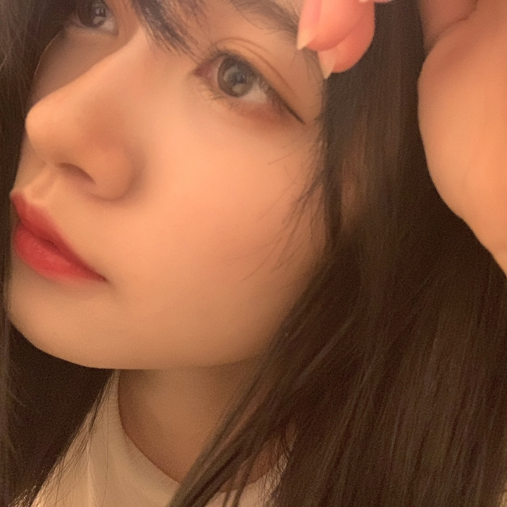
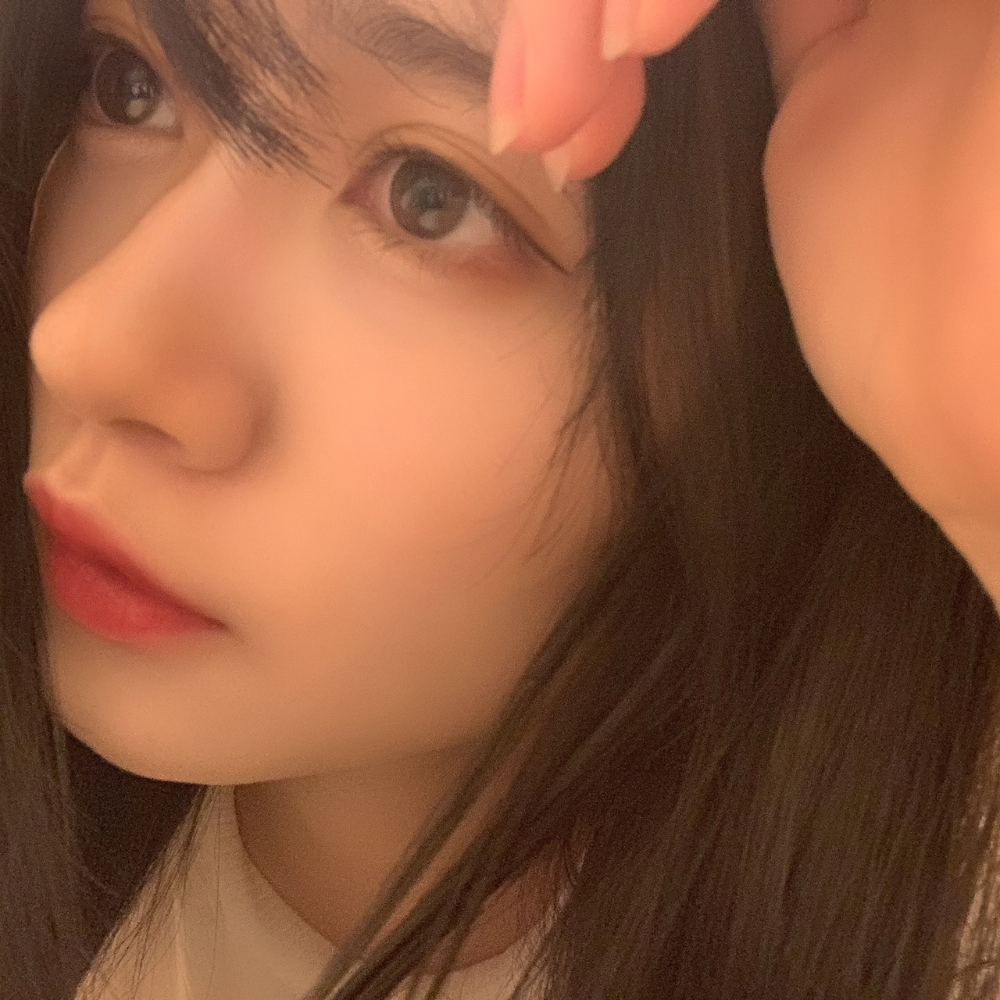

2020/0614Sunlove
おはようございます
こんにちは
こんばんは
いつも、ありがとうございます。
寺田蘭世です。☺️
最近は、アクセサリー作りました！
今はビーズ沢山欲しいです！
これにミサンガを作って
シンプルなTシャツにジャラジャラーっとアクセントで沢山付けたいですねこの夏は！！
ミサンガ小学生以来
覚えてるかな作り方、、、！
それと再び流行りの来ているシュシュも自分のお洋服からリメイクして作ったりしてます。☺️

髪色変えたとモバメでは報告していました。
46時間TVまで秘密にしようと思っていたのですが、、、
メンバーや
写真で見せた友人には
いいねーと評価いただけたのですが。
どうなのでしょうか。
でも、毎月髪色変えても
1年は12ヶ月ですから12色しか試せなくて
そう考えると短く感じますよね。
数字で改めて見つめ直すと
新しい事に挑戦したくなりませんか。
大切に楽しまなきゃ。☺️
色んな自分を皆さんも楽しんで下さいね。☺️
乃木坂工事中宜しくお願い致します。☺️




2020/06/14 18:12
コメント(1027)
ブログ更新ありがとう〜！
新しい髪色も良き良きですね！
また違った雰囲気で好きです〜(^^)
髪色はコロコロ変えられないだろうけど
お洋服とかメイクとかネイルとか
色々季節や気分によって変えられたら良きねー！
色んな蘭世さん魅せてください〜！！
ミサンガ？ブレスレット？可愛いね〜！
工事中出るのかなー？楽しみにしてるね〜！
だいすき (/ω＼)
(*´∇`)ﾉｼ ではでは～
新しい髪色も良き良きですね！
また違った雰囲気で好きです〜(^^)
髪色はコロコロ変えられないだろうけど
お洋服とかメイクとかネイルとか
色々季節や気分によって変えられたら良きねー！
色んな蘭世さん魅せてください〜！！
ミサンガ？ブレスレット？可愛いね〜！
工事中出るのかなー？楽しみにしてるね〜！
だいすき (/ω＼)
(*´∇`)ﾉｼ ではでは～
蘭世の可愛さとまらんぜ!
工事中見まーす！！
好き
好き
らんぜ＼(^o^)／お疲れさまでした
らぶ♡♡♡♡♡(*´ω｀*)
らんぜが作ったアクセサリーが気になるなあ(｡>﹏<｡)
絶対アクセサリー作りも超上手くてオシャレだな＼(^o^)／
きゃーー、可愛いこのベッドの上に寝転んで上から取る自撮り(｡>﹏<｡)♡♡♡♡♡
髪色はどんな感じかな？さらに46時間TVが楽しみだな((o(´∀｀)o))ﾜｸﾜｸ
1年12色は少ないって、らんぜの髪の毛が強いって羨ましいよ(｡>﹏<｡)（笑）
まー、一応ウイッグの選択肢もあるけどね（笑）
うわーー、3枚めの前髪が目を隠してるらんぜはめちゃ大人っぽくてセクシーだな(｡>﹏<｡)♡♡♡♡
早く動き蘭世をまたみたいなあ＼(^o^)／46時間TV楽しみ
あっ、これは作ったミサンガ？ほら、やっぱり上手でおしゃれだな(｡>﹏<｡)
いつか何かプロデュースできたら嬉しいなあ
これからも頑張って(/･ω･)/
らぶ♡♡♡♡♡(*´ω｀*)
らんぜが作ったアクセサリーが気になるなあ(｡>﹏<｡)
絶対アクセサリー作りも超上手くてオシャレだな＼(^o^)／
きゃーー、可愛いこのベッドの上に寝転んで上から取る自撮り(｡>﹏<｡)♡♡♡♡♡
髪色はどんな感じかな？さらに46時間TVが楽しみだな((o(´∀｀)o))ﾜｸﾜｸ
1年12色は少ないって、らんぜの髪の毛が強いって羨ましいよ(｡>﹏<｡)（笑）
まー、一応ウイッグの選択肢もあるけどね（笑）
うわーー、3枚めの前髪が目を隠してるらんぜはめちゃ大人っぽくてセクシーだな(｡>﹏<｡)♡♡♡♡
早く動き蘭世をまたみたいなあ＼(^o^)／46時間TV楽しみ
あっ、これは作ったミサンガ？ほら、やっぱり上手でおしゃれだな(｡>﹏<｡)
いつか何かプロデュースできたら嬉しいなあ
これからも頑張って(/･ω･)/
年に新しい月は12回しか来ないって発想なかったけど、毎月違うこと勉強して色んなこと身につけるのもいいなあって読んでて思った！
茶髪でも黒に近くても違う蘭世が見えてわくわくだー！
インターンとか対策考えたりしてつらいよぉ、次いつライブ行けるかなあって考える日々。。
今日もブログ更新ありがとう！
茶髪でも黒に近くても違う蘭世が見えてわくわくだー！
インターンとか対策考えたりしてつらいよぉ、次いつライブ行けるかなあって考える日々。。
今日もブログ更新ありがとう！
ヤバい可愛すぎる！ここ何年かで一番好きな髪色かも！
見せてくれてありがとう蘭世！(*^^*)
見せてくれてありがとう蘭世！(*^^*)
黒っぽいの髪色はさしぶりですね。
でも、相変わらず似合うすぎる。
乃木坂46時間TV、楽しみにしています。
でも、相変わらず似合うすぎる。
乃木坂46時間TV、楽しみにしています。
ブログ更新ありがとう！
ブログのタイトル何かひとつの言葉になってると思ってたけど、今回のから読んだら「LOVE＆Peace」だね笑
こんなご時世だからこそ、世界中を愛と平和でいっぱいにして
いつもの日常を1日も早く取り戻したいですね！
話をブログの内容に戻すね
ミサンガか〜
作ったことないな
学生の頃足首にしてる人はよく見たけど
Tシャツにつけてアクセントにするのもいいね！
オシャレな蘭世さんが考えそうな事だなって思った笑
髪色良きですね！
濃い灰色とかかな？笑
画像だけじゃハッキリ分からないけど
早く生で見たいよ〜
またコメントします！
ブログのタイトル何かひとつの言葉になってると思ってたけど、今回のから読んだら「LOVE＆Peace」だね笑
こんなご時世だからこそ、世界中を愛と平和でいっぱいにして
いつもの日常を1日も早く取り戻したいですね！
話をブログの内容に戻すね
ミサンガか〜
作ったことないな
学生の頃足首にしてる人はよく見たけど
Tシャツにつけてアクセントにするのもいいね！
オシャレな蘭世さんが考えそうな事だなって思った笑
髪色良きですね！
濃い灰色とかかな？笑
画像だけじゃハッキリ分からないけど
早く生で見たいよ〜
またコメントします！
ブログ更新ありがとうございます！！
おはようございます、こんにちは、こんばんは！
この更新時間だとこんばんはかな？
アクセサリーいいですね！最後の写真のやつですかね？可愛い！意外と簡単に作れるものなんですね、蘭世さんのセンスが出てて良きです！
洋服からリメイクってすごいですね、色んなところからリメイク出来るの羨ましいです！
髪色良きですね～暗い感じの色も似合ってますよ！
今回の写真はいつもと違う感じでかっこいいし、美しいです！
毎月変えても12色しか変えられないって聞くと全然な感じがしますね、色んな挑戦は大事ですね！思い立ったが吉日！
今回の乃木坂工事中出てるんですよね！絶対見ますよー！！
これからも頑張ってください！
いつもありがとうございます！
黒T
おはようございます、こんにちは、こんばんは！
この更新時間だとこんばんはかな？
アクセサリーいいですね！最後の写真のやつですかね？可愛い！意外と簡単に作れるものなんですね、蘭世さんのセンスが出てて良きです！
洋服からリメイクってすごいですね、色んなところからリメイク出来るの羨ましいです！
髪色良きですね～暗い感じの色も似合ってますよ！
今回の写真はいつもと違う感じでかっこいいし、美しいです！
毎月変えても12色しか変えられないって聞くと全然な感じがしますね、色んな挑戦は大事ですね！思い立ったが吉日！
今回の乃木坂工事中出てるんですよね！絶対見ますよー！！
これからも頑張ってください！
いつもありがとうございます！
黒T
やぁ(｡･ω･)ﾉﾞ最愛なる蘭世
ブログ更新ありがとう
やっぱタイトルは『LOVE』やったな
おお！蘭世
ほうほうミサンガと合わせて付けるんやな。
ビーズだとそれは良い感じに合うな
あと夏だから細い糸にワンポイントのチャームがついてる感じのアクセサリーも合うと思うで
ミサンガ俺も最近作ってないな～。
おれも最近前に作ったペンダントトップをキーホルダーにしようか悩んでるとこ
お！シュシュも作ったん！めっちゃ良いやん！それもリメイクっての『が良いよな
おおお！！！！
髪色暗めの色になってる！！
めっちゃ良いやん！！！
久しぶりに暗めの感じで高めのポニテが見れるかも！
めっちゃええやん！！
流石に毎月変えると髪痛むんちゃう？？
でも人生長くも短くも一度きり常に新しい事には挑戦したいよな。
難しいけど…
せやな、一秒でも大切にしていかないとな。
俺は蘭世
乃木中もちゃんと観るで～
つかもう写真も最高やん。
見惚れてしまう…なぁ蘭世
愛してる。
お！蝶々のモチーフかええな
蘭世
もっと作った物も見たいな
てかこの髪色でもこもこくまさん着られたらもう最高にやばいかも…笑
それじゃきっとまた後で(｡･ω･)ﾉﾞ
蘭世ー！
乃木中みるよーー！
楽しみー！
乃木中みるよーー！
楽しみー！
確かに髪色暗くなったね！
どの色にしろ蘭世さんは似合うと思いますけどね！
今日の乃木中楽しみにしてます！！
どの色にしろ蘭世さんは似合うと思いますけどね！
今日の乃木中楽しみにしてます！！
好き
ブログ更新ありがとう！
髪色ステキや〜！！
そして圧倒的眼力☺
乃木中楽しみにしてますね。
髪色ステキや〜！！
そして圧倒的眼力☺
乃木中楽しみにしてますね。
ブログ更新ありがとう。バッチリ確認します。また会いに行くし。またコメ残すね。ナオッチ
蘭世さん可愛すぎやしませんか

らんらん、こんばんは( ￣▽￣)ﾉｼブログ更新ありがとう♪
コメ久しぶりになってしまいました。ごめんなさい。
髪色もちろん明るいのも暗いのもどちらも似合ってますよ♪
個人的には暗め赤みがかった色が好きです。
おいらもこないだ革紐の７連ブレスレット買ったのですが付け外しがめんどくさい(汗)
ビーズは涼しげですね。
最後の写真ぐわし！ってぐわし！ってわかるかな？
コメ久しぶりになってしまいました。ごめんなさい。
髪色もちろん明るいのも暗いのもどちらも似合ってますよ♪
個人的には暗め赤みがかった色が好きです。
おいらもこないだ革紐の７連ブレスレット買ったのですが付け外しがめんどくさい(汗)
ビーズは涼しげですね。
最後の写真ぐわし！ってぐわし！ってわかるかな？
可愛いすぎです
蘭世ちゃんブログ更新ありがとう～ ♡
自分で洋服をリメイクしてシュシュ作れる蘭世ちゃん本当に器用で羨ましい～ ✨
モバメ見たよ～！髪色とっても似合ってて可愛いです！
毎月髪色の違う蘭世ちゃん見れるとは幸せだ～！！
乃木中絶対みる！楽しみにしてます～！
自分で洋服をリメイクしてシュシュ作れる蘭世ちゃん本当に器用で羨ましい～ ✨
モバメ見たよ～！髪色とっても似合ってて可愛いです！
毎月髪色の違う蘭世ちゃん見れるとは幸せだ～！！
乃木中絶対みる！楽しみにしてます～！
ブログ更新ありがとう！！
46時間楽しみ！！またブログ更新されるの待ってるね！
早く握手会行きたいな 体調には気おつけてね
46時間楽しみ！！またブログ更新されるの待ってるね！
早く握手会行きたいな 体調には気おつけてね
ブログ更新ありがとう！
新しい髪色めっちゃ似合ってます！個人的には暗い色が好きなので最高です！
それと綺麗な写真を今回もたくさん載せてくれてありがとうございます
最後に、最近筋トレ中によく滑走路をききますお気に入りの曲になりました。
体調には気をつけて元気でね！
新しい髪色めっちゃ似合ってます！個人的には暗い色が好きなので最高です！
それと綺麗な写真を今回もたくさん載せてくれてありがとうございます
最後に、最近筋トレ中によく滑走路をききますお気に入りの曲になりました。
体調には気をつけて元気でね！
おーっブログきてた！
さっき前のブログにコメントしちゃった◎
のぎのので
滑走路かかったよーって話。
そのあとワタボコリも♪
早くあなたの歌声が聞きとうございます。
そして…
髪ー！黒色！？
前髪ありの暗めの髪。
懐かしくもあり、大人びたからこそ新鮮でもあり。
お写真で見る限りでは、大好きです。
しかしすごいなー髪も全然痛んでない感じ。
上手に付き合ってるんだね◎
乃木中！出るの！？
観る！
さっき前のブログにコメントしちゃった◎
のぎのので
滑走路かかったよーって話。
そのあとワタボコリも♪
早くあなたの歌声が聞きとうございます。
そして…
髪ー！黒色！？
前髪ありの暗めの髪。
懐かしくもあり、大人びたからこそ新鮮でもあり。
お写真で見る限りでは、大好きです。
しかしすごいなー髪も全然痛んでない感じ。
上手に付き合ってるんだね◎
乃木中！出るの！？
観る！
蘭世！！ブログ更新ありがとう！！
新しい髪色似合ってます！！蘭世の暗めの髪色が好きやで、個人的にどストライクです！！
46時間tv あと少しですね！！蘭世が何やるか楽しみにしています！！ ！！
今日も、好きやお〜
新しい髪色似合ってます！！蘭世の暗めの髪色が好きやで、個人的にどストライクです！！
46時間tv あと少しですね！！蘭世が何やるか楽しみにしています！！ ！！
今日も、好きやお〜
アクセサリーも髪色もいいね！
個人的には黒系が好きなので。
明るい色から暗くした時の髪色が特に好き。
乃木中観まーす！
★とし★
個人的には黒系が好きなので。
明るい色から暗くした時の髪色が特に好き。
乃木中観まーす！
★とし★
ブログ更新ありがとう！！
アクセサリー作るんやねー
すごいね！
家でできることがあるのはいいことだね〜
新しい髪色もまたいい！
めっちゃ好きやわ〜！
またいろんな変化をお互い楽しんでいけたらいいな！
ありがとう！
46時間TVも楽しみにしてるね！
次の更新も楽しみにしてるー
アクセサリー作るんやねー
すごいね！
家でできることがあるのはいいことだね〜
新しい髪色もまたいい！
めっちゃ好きやわ〜！
またいろんな変化をお互い楽しんでいけたらいいな！
ありがとう！
46時間TVも楽しみにしてるね！
次の更新も楽しみにしてるー
めっちゃ髪色きれい！
蘭世さん更新ありがとう！
アクセサリー作ったのですか！？
器用すぎますよ…
ミサンガにシュシュ作り良いですね〜
グッズとして出しましょう笑
新しい髪色も素敵です！
蘭世さんはどの色でも綺麗に見せる事ができるので、色んな色に挑戦して下さい笑
確かに一年って長いようで短いですよね。
時間を大切に日々挑戦する事が大切ですね！
私もその姿勢見習います…
乃木中ももちろん見ますよ〜
楽しみにしてますね！
これからも応援してます！
アクセサリー作ったのですか！？
器用すぎますよ…
ミサンガにシュシュ作り良いですね〜
グッズとして出しましょう笑
新しい髪色も素敵です！
蘭世さんはどの色でも綺麗に見せる事ができるので、色んな色に挑戦して下さい笑
確かに一年って長いようで短いですよね。
時間を大切に日々挑戦する事が大切ですね！
私もその姿勢見習います…
乃木中ももちろん見ますよ〜
楽しみにしてますね！
これからも応援してます！
ブログありがとうーーー
アクセサリーkawaii
新しい髪色も暗め？で似合ってる〜
46時間テレビ頑張ってね！！
アクセサリーkawaii
新しい髪色も暗め？で似合ってる〜
46時間テレビ頑張ってね！！
私は髪色は暗めの色が好きなのですが、全体の雰囲気もあるので、それに合っているなら全然良いと思います。
いろいろ試してみるのは良いと思います。
私も20代の頃は変えたりしていましたが、今では素の髪色に落ち着きました。
いろいろ試してみるのは良いと思います。
私も20代の頃は変えたりしていましたが、今では素の髪色に落ち着きました。
ブログの写真すごい綺麗です。これからもたくさん蘭世の綺麗な写真が見たいです。
とまらんぜ〜！！！！！！！！！
ブログ更新ありがとう！
元気に過ごしてね！
元気に過ごしてね！
蘭世お疲れ様！！
ブログ更新ありがとう
髪色すごく似合っているよ！！
46時間TV楽しみにしてるね
特に蘭世の電視台は何するか気になる
ブログ更新ありがとう
髪色すごく似合っているよ！！
46時間TV楽しみにしてるね
特に蘭世の電視台は何するか気になる
ブログありがとうございます
えっと、えーと
美しさがバグってます！！！！！
落ち着いたらまたコメントしますっ！
じんす
えっと、えーと
美しさがバグってます！！！！！
落ち着いたらまたコメントしますっ！
じんす
こんばんは！ブログ更新ありがとう！
アクセサリーを手作りできるなんて蘭世は器用でうらやましい！
髪色、めちゃめちゃ良い！今まで髪色が明るかったひとが暗くするとオーラ(？)が薄まるんじゃないかって少し思っていたんだけれども、蘭世はもともと顔立ちがはっきりしてるから、その心配は無用すぎました笑
これからもいろんな蘭世を見せてくださいね！！
実は今日、無くした財布を他の県に行ってまで探し回ってたのですが、蘭世のブログが更新されたタイミングで見たかったんです！きっと蘭世が見つけてくれたんだと勝手に思い込んでます笑
ありがとう！！
アクセサリーを手作りできるなんて蘭世は器用でうらやましい！
髪色、めちゃめちゃ良い！今まで髪色が明るかったひとが暗くするとオーラ(？)が薄まるんじゃないかって少し思っていたんだけれども、蘭世はもともと顔立ちがはっきりしてるから、その心配は無用すぎました笑
これからもいろんな蘭世を見せてくださいね！！
実は今日、無くした財布を他の県に行ってまで探し回ってたのですが、蘭世のブログが更新されたタイミングで見たかったんです！きっと蘭世が見つけてくれたんだと勝手に思い込んでます笑
ありがとう！！
いつもお世話になっております。
stainです。
友達でビーズを作ってる子がいて、
（ガラスの棒をバーナーであぶって作る）
結構ハンドメイド女子に人気だそうで。
展示場でのイベントにも出店してるとか。
蘭世ちゃんも、作って売っちゃう？笑
ミサンガだったらメンズでも着けれる！
欲しい！買う！宣伝するー！
stainです。
友達でビーズを作ってる子がいて、
（ガラスの棒をバーナーであぶって作る）
結構ハンドメイド女子に人気だそうで。
展示場でのイベントにも出店してるとか。
蘭世ちゃんも、作って売っちゃう？笑
ミサンガだったらメンズでも着けれる！
欲しい！買う！宣伝するー！
蘭世ブログ更新ありがとう！
か、髪色素敵すぎる！！
新しい髪色良い感じだね
前のプリンも新しくて良かったけれど、
今回の髪色も本当に似合ってるよ
より一段と綺麗になったね
46時間TVみるよ！！今から楽しみ！！
実はね、
就活のために握手会しばらく行けなくなるって言ってたけど、
この度無事就活終わって来年から東京の企業に就職します
本当にこの一年は蘭世に直接会えなくて苦しかった、、、
毎月のように握手会で色々な話して笑ってた日々を思い出して本当に辛かった
でも、就活に集中するために自分で決めたことだからと思い頑張りました
会えない期間も蘭世のブログやモバメをモチベーションに頑張ってきました
今こうして就活を終えて改めて感じるのは
僕は寺田蘭世が大好きだということ
辛いときも蘭世を見て元気になったし
何度下を向いても蘭世と次会う日に向けて頑張ろうと思ってまた上を向いたし
とにかく、
僕が就活を終えて次のステージに進むことができたのは
間違いなく蘭世のおかげです
本当にありがとう
ありがとう
感謝しかないです
蘭世がいなかったら蘭世と出会えなかったら
今の自分はありません
もう一度、
ありがとう
握手会で直接話そうと思ってたけど、
この状況でなかなか会う機会がないからブログのコメントという場であるけれど、蘭世には感謝の気持ちを伝えたかったから
次会えるときが本当に楽しみ
みんなより会えない時間が長い分、
本当に会いたい気持ちが強いんだよ！！
次会えるときまで元気に生きます
だから、蘭世も体調には気を付けて元気でね
最後に、
蘭世の存在が本当に自分にとって大きいものだと感じる期間でした
蘭世が僕のインフルエンサーです
ありがとう
本当に本当に
人として大好きです
か、髪色素敵すぎる！！
新しい髪色良い感じだね
前のプリンも新しくて良かったけれど、
今回の髪色も本当に似合ってるよ
より一段と綺麗になったね
46時間TVみるよ！！今から楽しみ！！
実はね、
就活のために握手会しばらく行けなくなるって言ってたけど、
この度無事就活終わって来年から東京の企業に就職します
本当にこの一年は蘭世に直接会えなくて苦しかった、、、
毎月のように握手会で色々な話して笑ってた日々を思い出して本当に辛かった
でも、就活に集中するために自分で決めたことだからと思い頑張りました
会えない期間も蘭世のブログやモバメをモチベーションに頑張ってきました
今こうして就活を終えて改めて感じるのは
僕は寺田蘭世が大好きだということ
辛いときも蘭世を見て元気になったし
何度下を向いても蘭世と次会う日に向けて頑張ろうと思ってまた上を向いたし
とにかく、
僕が就活を終えて次のステージに進むことができたのは
間違いなく蘭世のおかげです
本当にありがとう
ありがとう
感謝しかないです
蘭世がいなかったら蘭世と出会えなかったら
今の自分はありません
もう一度、
ありがとう
握手会で直接話そうと思ってたけど、
この状況でなかなか会う機会がないからブログのコメントという場であるけれど、蘭世には感謝の気持ちを伝えたかったから
次会えるときが本当に楽しみ
みんなより会えない時間が長い分、
本当に会いたい気持ちが強いんだよ！！
次会えるときまで元気に生きます
だから、蘭世も体調には気を付けて元気でね
最後に、
蘭世の存在が本当に自分にとって大きいものだと感じる期間でした
蘭世が僕のインフルエンサーです
ありがとう
本当に本当に
人として大好きです
どんな髪色の蘭世も好きだけどやっぱ黒が1番似合う気がする！
めちゃめちゃ46時間楽しみにしてるよ！頑張ってね！！
更新ありがとう！
めちゃめちゃ46時間楽しみにしてるよ！頑張ってね！！
更新ありがとう！
めちゃめちゃ可愛いお写真ありがとうございます！
落ち着いた髪色も好きです！どんな髪色も似合うの本当に凄いなーと思います。
蘭世さんを見習って色々挑戦しないとな。。と改めて思いました。
落ち着いた髪色も好きです！どんな髪色も似合うの本当に凄いなーと思います。
蘭世さんを見習って色々挑戦しないとな。。と改めて思いました。
らんぜー
まじでかわいすぎ。
髪色めちゃんこめちゃめちゃ
良いやんけ～✌️
ミサンガとか販売してほしい。
良いやんけ～✌️
ミサンガとか販売してほしい。
らんぜさん髪型可愛いです
自分もおしゃれ目指して頑張りますー！
早く会いたいよ〜？
体調に気をつけてくださいー
自分もおしゃれ目指して頑張りますー！
早く会いたいよ〜？
体調に気をつけてくださいー
蘭世ちょー美しい！！！モバメ取れないのくやしいけどブログで報告してくれるのほんとありがたい！46TV楽しみにしてます！
おつ
とっても似合ってると思います。
ステキです！！
ステキです！！
やっぱり蘭世はきれいだな
今回の髪色も好きだよ
俺にてっぱつなミサンガつくってほしいな
今回の髪色も好きだよ
俺にてっぱつなミサンガつくってほしいな
可愛すぎる(；_；)優勝(；_；)蘭世ちゃんしか！可愛いです！最高！私もちょうど黒髪にしたところだったからお揃いだね〜〜！だいすき！いつもしあわせをありがとう
髪色似合ってます、これからも頑張ってください！


髪色モバメからずーーーーーっと気になってたから嬉しいし、めっちゃ似合ってるよ！(^^)
アクセサリー作ったんね！かわいい！あいらは、サンキャッチーって言う、太陽に当たると虹に光って家中に虹がいっぱいになって幸せを運んでくれるものを作ったよ！調べてみて〜(^^)
毎月髪色変えたら楽しいけど髪が傷みそうで大変だねw
今は高校で髪色変えられないけど卒業したらすぐ変えたくて、つぎの蘭世との握手で決めて欲しい！
今日の乃木坂工事中楽しみにしてるよ！
このマークあいらの名前の由来のアイラブユーのマークだからめっちゃ嬉しいし大好きなんだ！
アイラブユーは人を幸せにできると思うし、たくさんの人に伝えたいし、蘭世にもこれからも伝えたいー。
大好きってたくさん伝えたい！
いつもブログ更新ありがとう。
46時間テレビ楽しみに毎日頑張ってるよ
蘭世も頑張ってね。(^^)
だいすきだよ。
アイラブユーのあいら。より！